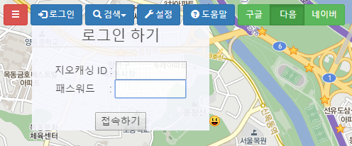
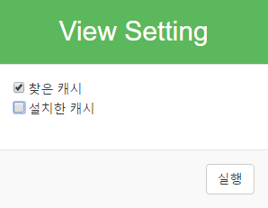
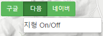
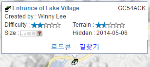
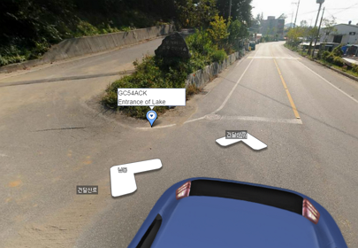

이 사이트는 지오캐싱을 쉽고 편하게 즐기게 하는 목적으로 만들어졌습니다.
우리나라에서는 구글맵이 그다지 좋지 않습니다. 특히 등산로 정보나 등고선이 없어서, 산에 있는 지오캐시를 찾으러 갈 때에는 여러가지로 불편합니다. 이 사이트는 우리나라에 있는 지오캐시를 다음지도와 네이버 지도위에 표시하여 캐시의 위치를 쉽게 찾아볼 수 있도록 하였습니다.

가장 먼저 해야 할 일은 로그인입니다. 로그인 버튼을 누르면 위 그림과 같이 메뉴가 열리는데, 여기에 아이디와 비밀번호를 입력하면 됩니다. 편의를 위하여 최근에 사용한 아이디와 비밀번호가 자동으로 다시 됩니다.
로그인을 하면 "잠시 기다려주세요. 처리중입니다."라는 메시지가 나타납니다. 잠시 기다리면 전국의 모든 캐시가 지도상에 표시됩니다.
아이디가 없을 분은 회원가입을 하시면 사용할 수 있습니다. 회원가입할 때 geocaching.com 에서 사용하는 아이디를 정확하게 입력하셔야 자신의 캐시의 상태를 쉽게 알 수 있습니다.

설정을 누르면 위와 같은 화면이 나타납니다. 체크박스를 선택한 후 [실행] 버튼을 누르면 선택한 내용에 따라 지오캐시가 표시됩니다.
예를 들어 위와 같이 찾은 캐시는 체크하고 숨긴 캐시에는 체크를 지우면 숨긴 캐시는 표시되지 않습니다. 아직 찾지못한 캐시는 항상 표시됩니다.
참고 : 스마트폰에서 사용할 경우, 성능 문제로 찾지 못한 캐시만 표시됩니다. 설정 메뉴도 표시되지 않습니다.
설정 기능은 로그인 한 후에만 사용할 수 있습니다.

버튼을 클릭할 때마다 구글지도, 다음지도, 네이버지도가 바뀝니다. 지도를 이동하거나 확대/축소를 해도 항상 거의 동일한 지점을 표시하므로, 지도를 비교할 수 있습니다.
다음지도와 네이버 지도의 경우에도 지역에 따라 표시된 내용이 다르므로 비교를 하고 적당한 지도를 사용하시면 됩니다.
지도 비교 기능은 로그인 하지 않아도 사용할 수 있습니다.

지도상에 표시된 지오캐시 아이콘을 클릭하면, 해당 지오캐시에 대한 간단한 내용이 info window로 표시됩니다. 좀더 자세한 내용을 보시고 싶을 때에는 지오캐시의 제목을 클릭하면 별도의 창에서 지오캐싱닷컴(geocaching.com) 사이트가 열립니다. 로그인이 필요하실 수 있습니다.
다음 지도를 사용할 경우에는 로드뷰 보기와 길찾기 기능을 사용할 수 있습니다. info window 아래쪽에 있는 로드뷰 또는 길찾기를 누르시면 됩니다.

로드뷰에는 위 그림과 같이 지오캐시의 위치도 표시됩니다. 하지만 이 위치는 단순 참고용으로, 실제 위치와는 많이 다릅니다. 참고로만 보세요.
원래 이 사이트는 데스크탑용으로 개발하였습니다. 스마트폰에서도 사용하실 수는 있지만, 전국 데이터를 한꺼번에 올리므로 성능이 많이 떨어집니다.
메뉴에는 나와 있어도 지원되지 않는 내용이 있습니다. 언제가 될지는 모르지만, 그래도 언젠가는 추가하려고 노력하고 있음을 알려드립니다. :)
지도에 표시되는 지오캐시는 최신 데이터가 아닙니다. 개발자가 주기적으로 업로드해 주고 있습니다.
기타 오류를 신고할 게 있으시거나 요청할 게 있으시면 개발자의 회원정보에 들어가셔서 메시지센터로 연락을 주시기 바랍니다.